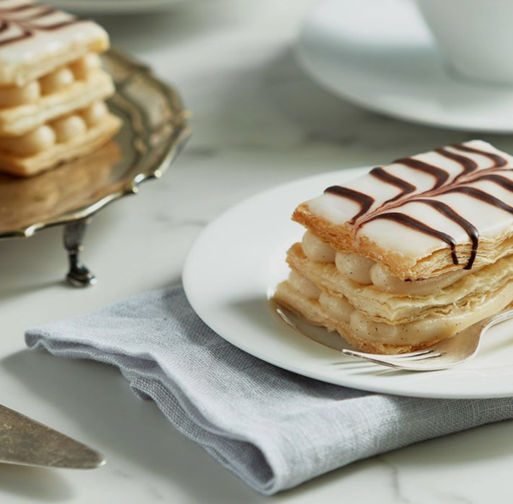

"Thus social space, and especially urban space, emerged in all its diversity – and with a structure far more reminiscent of flaky mille-feuille pastry than of the homogeneous and isotropic space of classical (Euclidean/Cartesian) mathematics" (Lefebvre)
